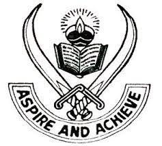

Guru Nanak Mission Public School
Aspire and Achieve
Home Page
Facilities
- Spacious, airy and well-equipped Classrooms.
- A huge library with a good variety of resource books, reference books, periodicals, thesaurus etc.
- Well equipped Science Labs.
- Three well-equipped Computer Labs with latest softwares.
- Multimedia Lab based on latest Israeli technique.
- Separate building for Primary wing.
- Vast playground including Basket ball and Volley ball courts and Football ground.
- Separate playground for Primary students having a variety of swings.
- indoor games- Table tennis, Badminton, Carrom etc.
- Water purifiers and coolers.
- Tube well for uninterrupted water supply.
- A large Auditorium for Cultural activities, Seminars and other events.
- Under Roof Cycle Stand.
- Canteen.
- Pay phone.
- A fleet of 10 buses plying covering a distance of 25kms from school.
- Stationery Store.
- Membership of Tribune in Education (TIE) Program.